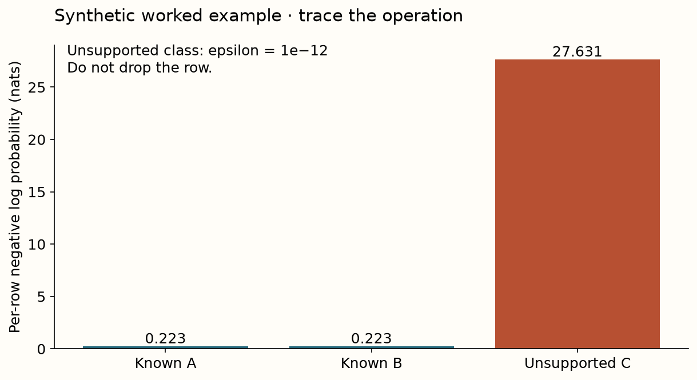

Find the broken prediction contract
A computation and evidence reference
Core distinction
No, dropping them changes the evaluated population and hides coverage failures.
Implementation contract
| Operator | Required behavior |
|---|---|
open_class_loss | Score all required labels with a disclosed epsilon for unsupported classes; preserve class/probability alignment. |
corrupt_column | Create a non-mutating missing/scale test intervention using a training-derived center. |

Measured evidence and limit
The three-task corruption panel retains every test row and pairs each intervention with its clean baseline. The separate synthetic unseen-class fixture has all-row log loss 9.359 with epsilon 1e−12. It is a class-support diagnostic, not measured v2 open-set detection performance.
Before making a claim
- Identify source, model/checkpoint and data versions.
- Trace which labels enter each computation.
- State what is fixed, varied and measured.
- Use the right uncertainty and aggregation unit.
- Name the unrun comparison and a falsifying experiment.
Primary reading: Realistic Evaluation of TabPFN v2 in Open Environments. Exact regeneration contract.